PLLA 200mg
바이알당 200mg의 명확한 제품 정체성
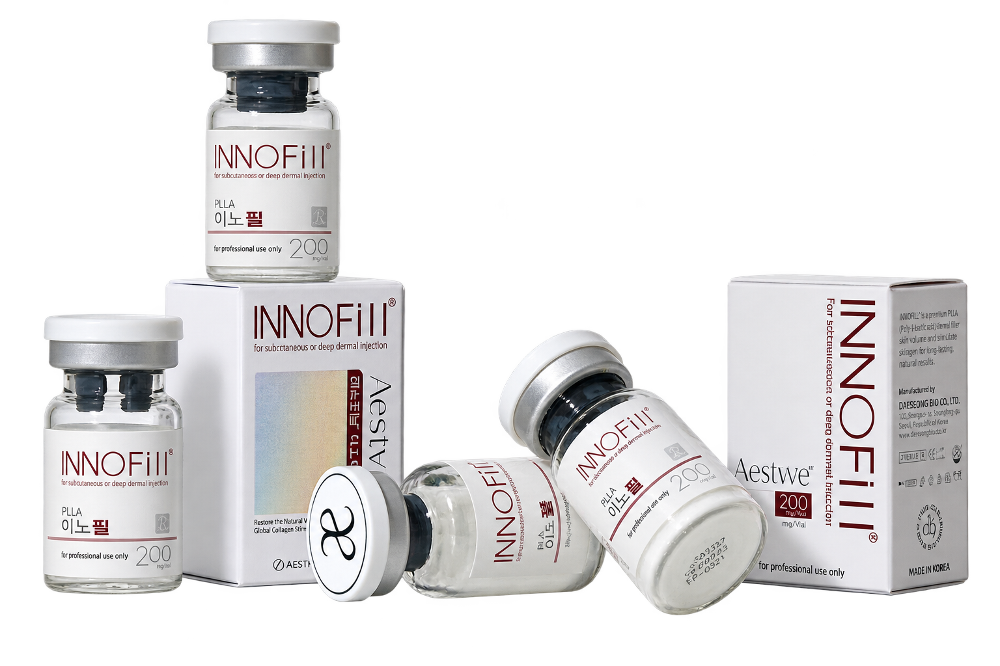
PLLA BIOSTIMULATOR
시간을 더해 완성하는
깊이의 변화
콜라겐 생성과 세포외기질 재형성을 통해 피부 하부 조직의 구조적 기반을 다시 정돈하는 PLLA 기반 바이오스티뮬레이터.
For subcutaneous or deep dermal injection
THE ESSENCE OF TIME
단순한 볼륨이 아닌 피부 깊은 곳의 구조를 새롭게 설계합니다. INNOFILL PLLA는 콜라겐 생성을 유도해 자연스럽고 지속적인 변화를 이끌어냅니다.
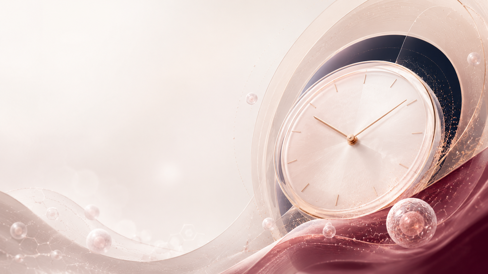
제품 정체성부터 작용 개념까지, 시간에 따른 구조적 변화를 중심으로 설계된 기준입니다.
바이알당 200mg의 명확한 제품 정체성
내인성 콜라겐 생성 중심의 접근
피부 하부 지지 기반을 함께 고려
한 번의 부피보다 시간에 따른 변화를 지향
POLY-L-LACTIC ACID
INNOFILL PLLA는 즉각적인 부피보다 콜라겐 재형성, 조직 밀도, 안면 지지 기반의 변화를 고려합니다.
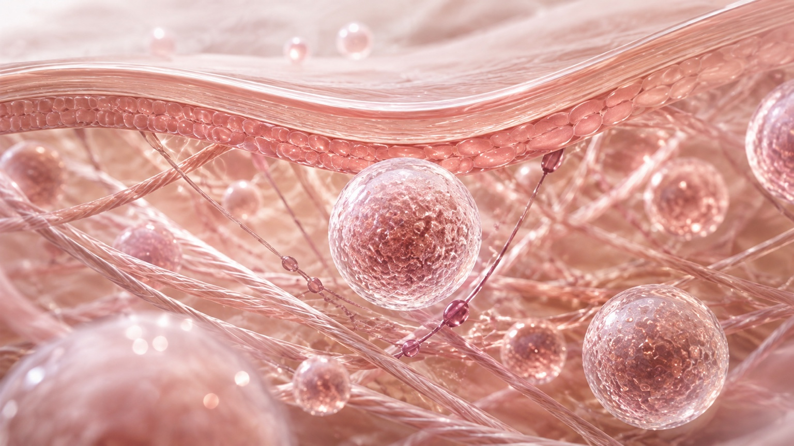
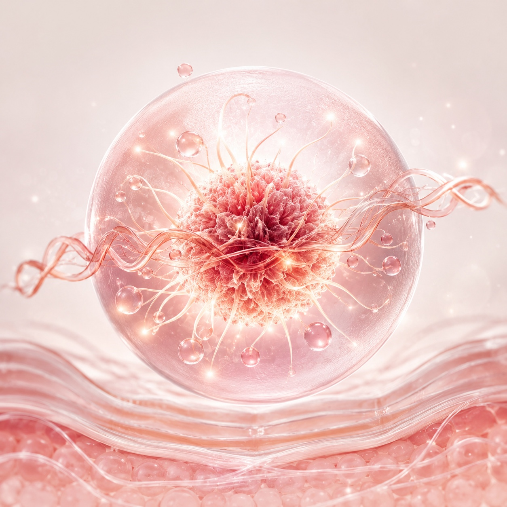
섬유아세포 활성과 신생 콜라겐 형성 방향.
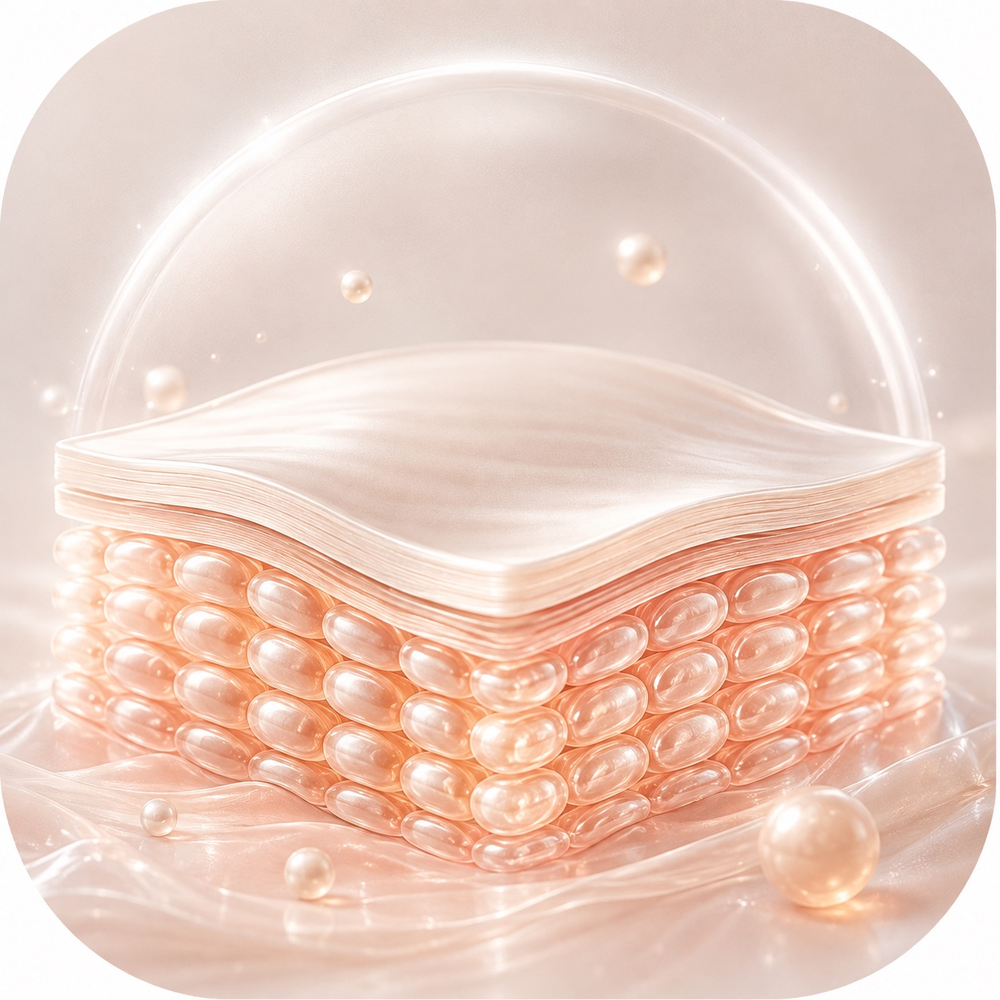
세포외기질이 다시 정돈되는 구조적 접근.
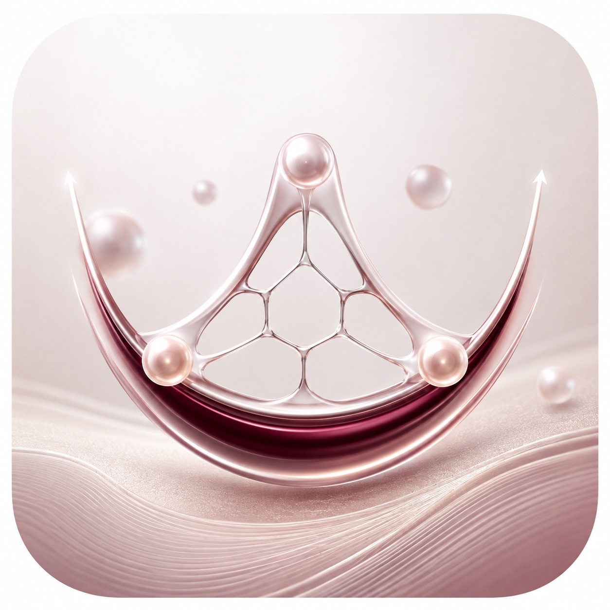
피부 하부 구조의 지지 흐름을 함께 고려.
MECHANISM OF ACTION
콜라겐을 자극하고 조직의 구조를 다시 세우며 시간이 지나면서 자연스러운 볼륨을 되찾는 INNOFILL PLLA Biostimulation Solution
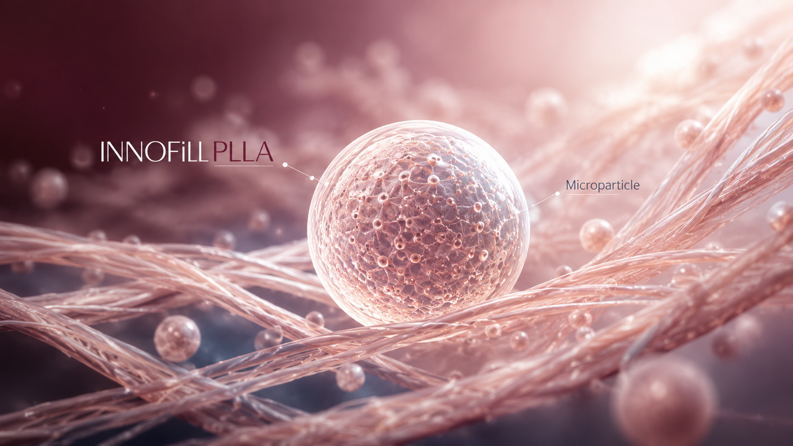
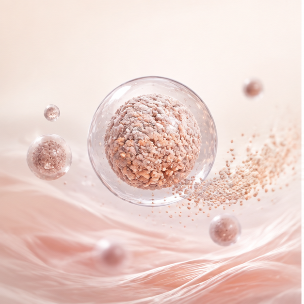
STEP 01목표 조직층에 균일하게 분포
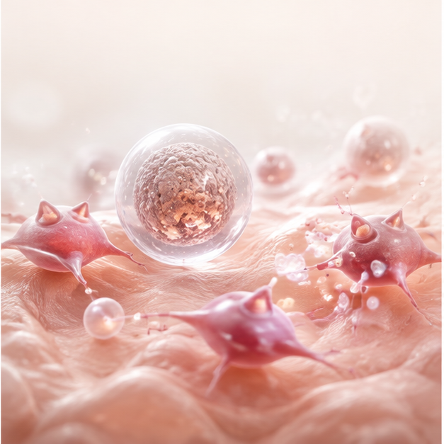
STEP 02조절된 조직 반응 형성
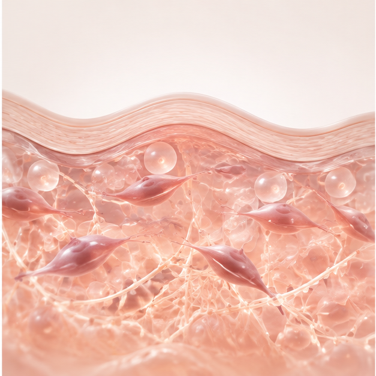
STEP 03섬유아세포와 ECM 재형성
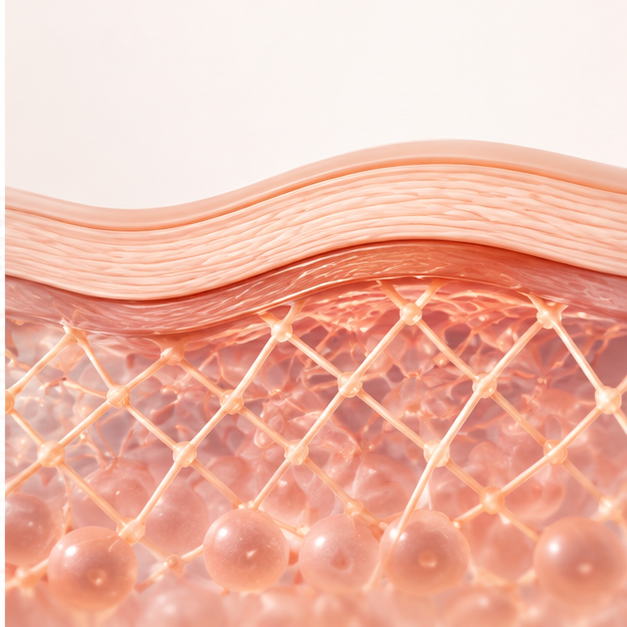
STEP 04조직 밀도와 지지 기반 개선
PLLA VS PDLLA
입체배열과 결정성의 차이는 수분 침투, 가수분해, 조직 반응의 시간축에 영향을 줄 수 있습니다.
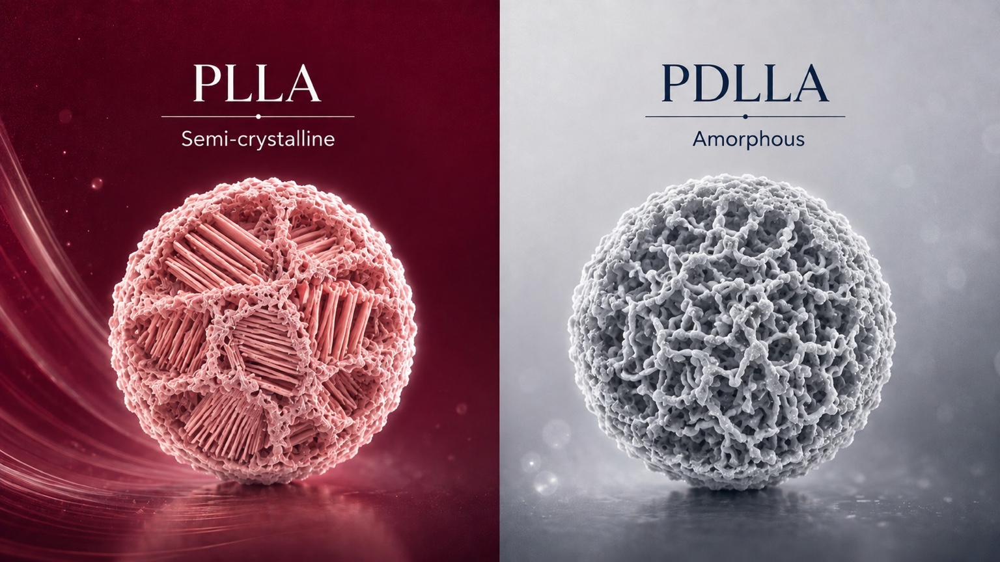
실제 임상 반응은 분자량, 입자 크기·형상, 재구성 농도, 주입량과 주입층에 의해 함께 결정됩니다.
VISIBLE PROGRESS
시술 직후의 변화에만 머무르지 않고, 시간 경과에 따라 콜라겐이 축적되며 피부 하부 조직의 지지 기반이 점차 정돈됩니다.
자연스러운 시간 축 안에서 콜라겐 반응을 유도합니다.
세포외기질과 조직 구조의 재정비를 함께 고려합니다.
즉각적 팽창보다 조화로운 볼륨 개선 방향을 지향합니다.
하부 지지 기반의 정돈을 통해 피부의 탄탄한 인상을 돕습니다.
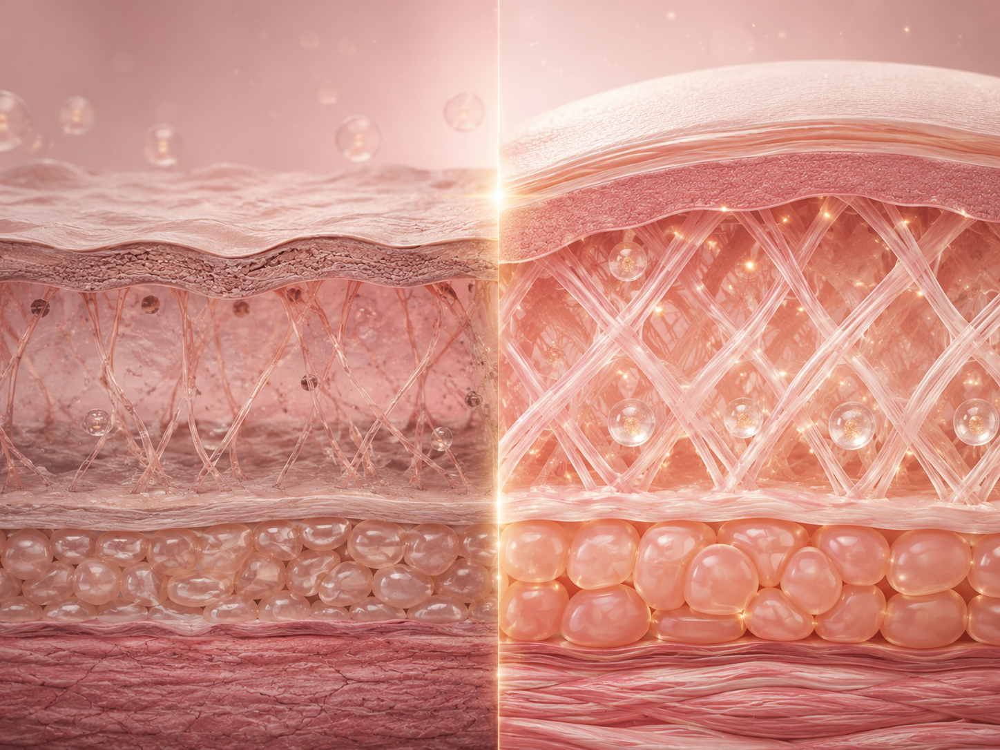
TREATMENT PROTOCOL
제품 준비, 수화, 시술 전 점검
INNOFILL PLLA 200 mg / 바이알
멸균수 약 8mL • 리도카인 2mL
기본 최소 30분
응집·침전·불균일 여부 확인
* 균일한 현탁액 형성을 위해 최소 30분 이상의 수화 시간을 확보하고, 보다 안정적인 입자 분산을 위해 충분한 사전 수화를 권장합니다.
FACE DESIGN PROTOCOL
0.5–1.0 cc / side
캐눌라, 팬닝0.8–1.0 cc / side
캐눌라, 선상 역주입1.0–1.5 cc / side
캐눌라, 팬닝0.3–0.5 cc / side
얕은 선상 주입0.3–0.5 cc / side
선상 역주입0.5–1.0 cc / side
캐눌라, 선상 주입진피하–피하지방층
25–27G 캐눌라 또는 27–30G 니들
표기 용량은 교육용 예시이며 실제 시술은 피부 상태와 제품 희석 비율에 따라 조정
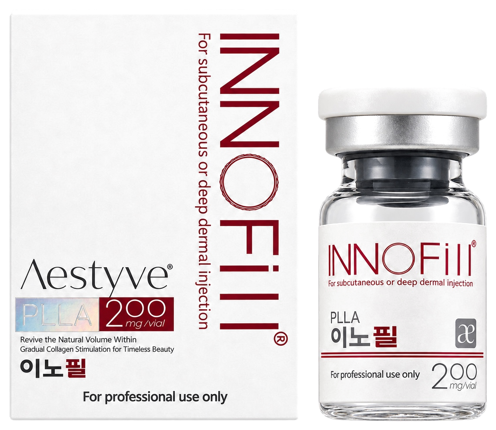
PRODUCT SPECIFICATION
PLLA BIOSTIMULATOR
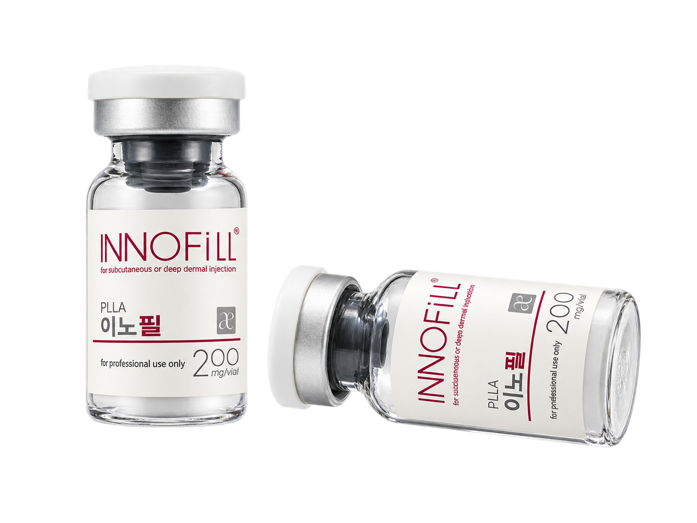
※ 본 페이지는 제품 및 관련 문헌을 바탕으로 작성된 정보 제공용 자료입니다.
※ 실제 제품 사용 전 공식 사용설명서(IFU), 허가사항 및 국가별 규정을 확인하십시오.
PLLA · 200 mg / Vial
공급 제품의 라벨·로트·사용기한을 기준으로 제조 관련 문서의 적용 범위를 확인합니다. 제조 정보는 해당 제품 자료를 기준으로 안내합니다.
제품 규격서, 라벨·IFU, 해당 완제품 CoA 및 등록 관련 자료를 요청할 수 있습니다. 제공 가능 문서는 제품과 대상 국가에 따라 확인합니다.
도입 국가와 수입 주체를 알려주세요. 제품별 등록·수입 요건을 검토한 후 공급 가능 여부를 안내합니다.
표시 규격은 브랜드 제공 자료 기준이며, 주문 시 최신 공급 라벨·규격서와 대조합니다.
제품의 특성과 적용 규격에 따라 원료부터 완제품까지 품질 자료를 검토합니다.
원료 확인, 성분·함량, pH 및 제품별 물성 규격
적용 대상 제품의 무균·미생물, 엔도톡신 및 잔류물 시험 항목
제조번호, 사용기한, 충전량, 포장 밀봉 상태와 보관 조건
INNOFILL은 성분·함량, 입도 분포 및 해당 제형의 품질 규격을 확인합니다.
인증과 시험 수치는 해당 제품·모델·제조소 또는 로트에 적용되는 유효한 증빙이 확인된 경우에만 공개합니다. 문서의 발행기관, 발행일, 적용 범위를 함께 확인하며, 원료 시험 결과와 완제품 시험 결과를 구분합니다.
위 내용은 제품별 품질 검토 항목이며, 모든 제품의 시험 완료나 인증 취득을 의미하지 않습니다.